(Dis-)Assembling of Clavinova CLP-970
(Dis-)Assembling a Clavinova CLP-970

I recently had to disassemble my clavinova CLP-970 for various reasons.
I followed the excellently written guide from this blog post (by Sylvia) and integrated this text with images. I didn’t really have anything to add to this comprehensive text so in the following I just copied her text:
I was able to perform the entire task using a single long (15cm shaft) cross-headed screw-driver that I had magnetised, and a thin piece of metal, which in my case was a paint scraper.
In the discussion, “backwards” means towards the back of the piano. Related words take their meanings accordingly.
- Make sure the piano is unplugged from the mains.
- The music stand is attached using keyhole mountings. Remove it by sliding it upwards by a couple of centimeters and it will unlock and can be easily be pulled forwards. Be careful that it doesn’t simply fall off!
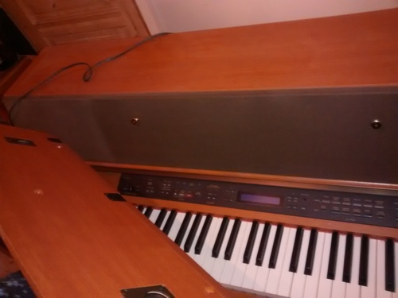
- Remove the two large brass mountings that held the music stand.
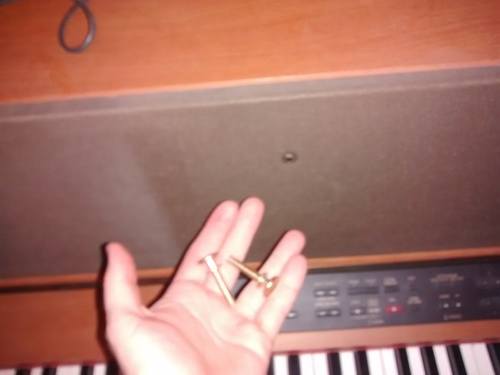
- The one centimeter thick frame for the fabric speaker cover is now held only by Velcro, and can be pulled off from either side.
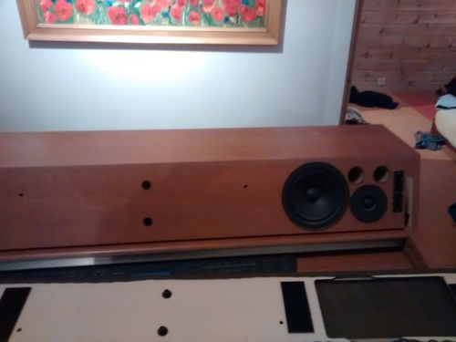
- At each end of the speaker enclosure there is a large slot through which a screw can be reached. Remove the two screws (that is, one from each end).
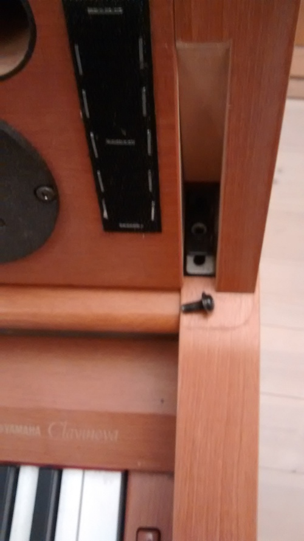
- The speaker enclosure is hinged at the back, and can now be tilted right over until it is completed inverted. Make sure there is a clear space in which to do this, and note that the enclosure is heavy.
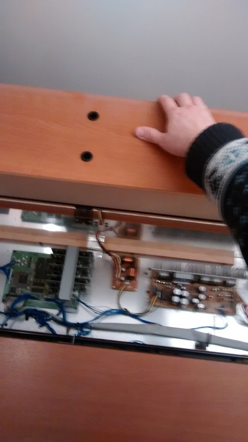
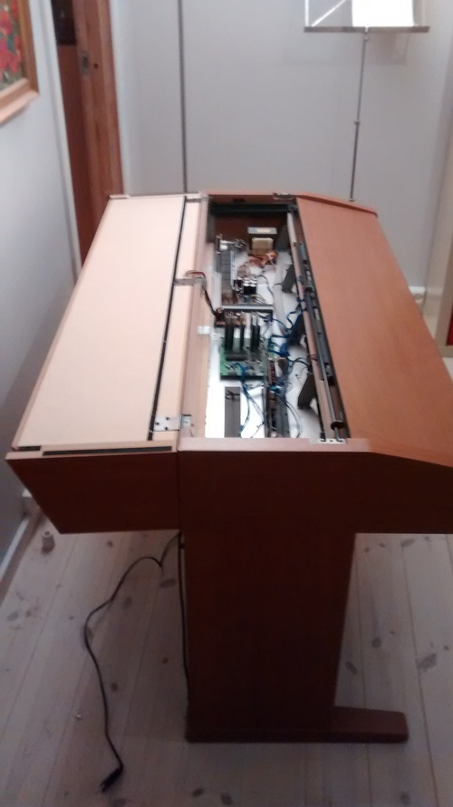
- I completely removed the keyboard cover. I’m not sure now that that’s necessary. It may be possible to deal with keyboard without actually removing the cover.
- With the keyboard cover closed, locate the two plastic clips that cover an opening in the keyboard track slot. Remove the two screws (note, they are very small, and accordingly easy to drop and lose), and remove the plastic clips.
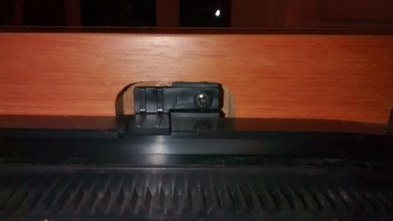
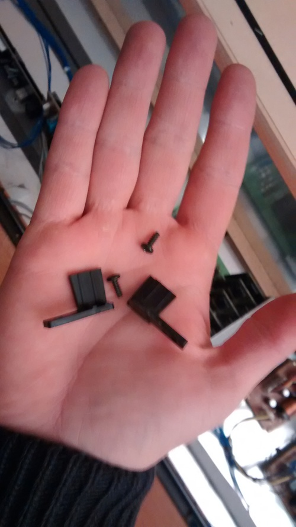
- Open the keyboard cover until it is possible to lift the keyboard axle (which has a gear wheel at each end) out of the slot.
- With the axle now running on top of its slot, position the keyboard cover so that it is about half closed, then lift the rear until the cover is vertical. Slowly turn your body until the keyboard cover front runners disengage. The keyboard cover is now free. You shouldn’t have to apply any force.
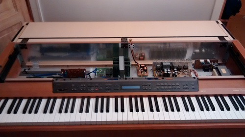
- The control panel is attached to the base by 5 metal brackets, each containing two screws. Remove the screws. There is also another screw at the left hand side, which also needs to be removed. NOTE this is not the same type of screw as the other ten. It’s a self-tapper with a blunt end.
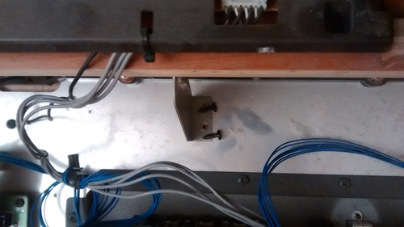
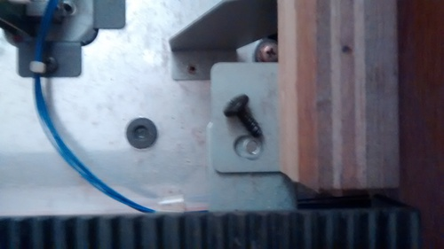
- Remove the screw that attaches the black grounding wire to the metallic base.
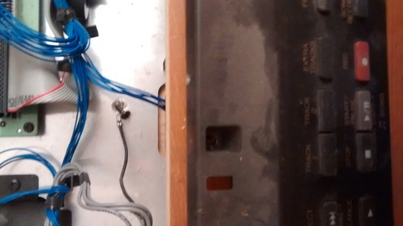
- The control panel can now be lifted up (CAREFULLY!) and rested on the keyboard cover track. It is still attached to the base by wires, which must not be stretched. The reason the black grounding wire was detached in step 8 is that it is not long enough to allow this step without its being disconnected.
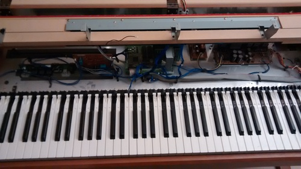
- Remove the nine large and two small brass screws that hold the keyboard in place.
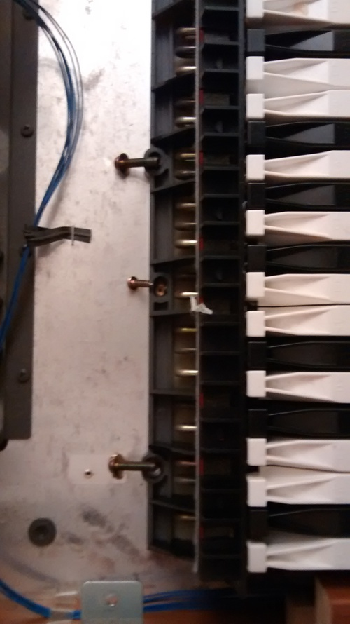
- Remove the wooden blocks. Each block is held in place by a single screw, but has prongs at the front that engage with the case, so it has to be moved backwards a bit before it is completely free. The right hand one is in any case still attached to wires, and can only be moved out of the way.
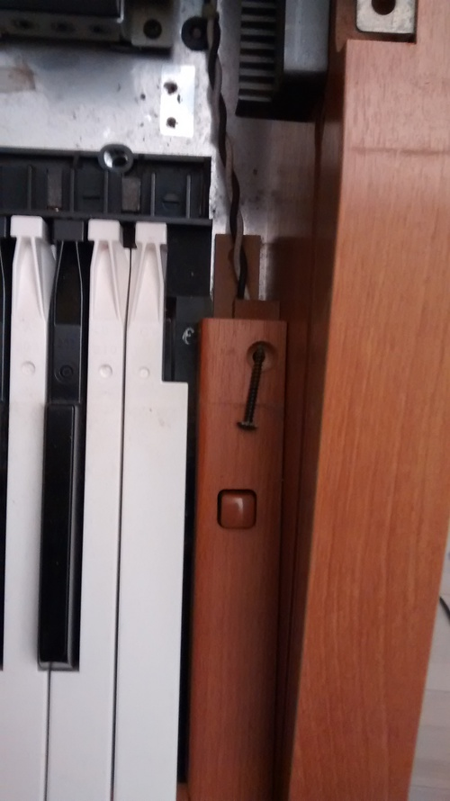
- Lift up the front of the keyboard, and detach the multi-wire connector from its socket at the front middle of the keyboard. It should just pull out, but be gentle. Do not pull by the wires! You may also see that the wires are attached to the keyboard by some adhesive tape, which will have to be removed.
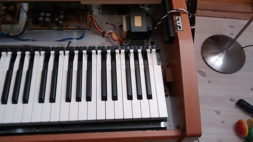
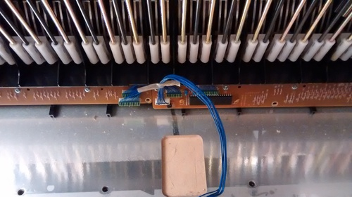
- Only if you want to completely remove the keyboard: At the back of the keyboard gently prise open the plastic clip that holds the wires in place at the back of the keyboard, and release the wires.
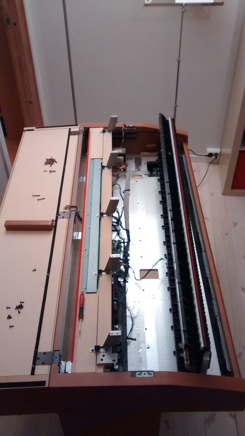
In the original guide, there is more information on removing single keys. I didn’t do that here.
Reassembly - the reverse of the above.
- When plugging the connector back into the keyboard, note that it will only go in one way round. Again, be gentle. It shouldn’t require much force.
- When replacing the right hand block of wood containing the power switch, you will need to watch where the wires go. Both blocks have metal prongs at the front, which need to engage into holes in the frame.
- When putting the keyboard cover back, and before trying to close it, make sure that both ends of the axle can reach their rear end stops. If only one can, then you’ll have to lift one end of the axle out of the slot, and rotate it a bit. Repeat until correct.
- The keyboard track clips are mirror images of each other, and are marked L and R accordingly.
- When replacing the fabric speaker cover frame, be careful not to push where the fabric covers the speakers. Note that there are central plastic locator pins that have to engage with holes in the speaker enclosure.